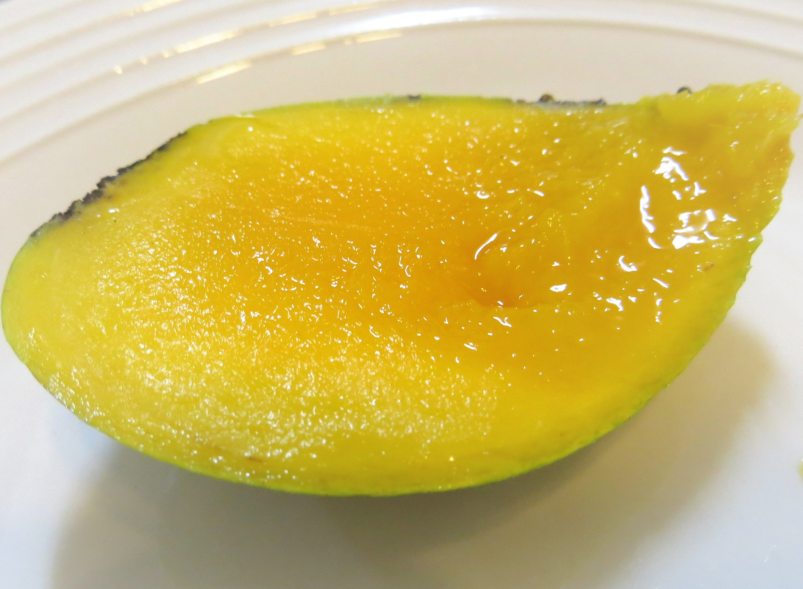

Diary
清晨六點三十分起床，和住在附近的朋友一起去慢跑，一切都很美好的寧靜突然被推土機的轟隆聲堆毀。
在家前面的大水溝，幾位工人和推土機在水溝對面不知道在挖什麼?湊近一看，那個大怪手把水溝旁的雜草一根不留地通通挖開！而那個地方正是傳說中可以驅蚊的「香蒲」生長的環境，就這樣被無情地挖去太不值得了！只好全家動員拿手套、網子、剪刀，順便帶上腳踏車執行「香蒲及時搶救任務」。
在推土機的轟隆壓迫下，先騎著腳踏車去對面的水溝邊搶救，把黃蒲有如蠟燭花序一一剪下，能剪多少就剪多少，過程中還有旁邊雜草的針不小心刺進手指，好險有整根完整拔出來不然就會更麻煩了......。終於大部分的香蒲蠟燭都被救回來了！這樣那些邊境中求生存的生命就能夠留下身上的一部分，繼續燃燒出生命的火花、造福全家人。
在網路拍賣上搜尋發現，今天搶救的所有香蒲蠟燭總共為我們賺了1500元台幣以上，由於網路有人賣一隻25塊錢甚至更貴，而這次剪回來的保守估計有60枝以上，真的是剪到可以用一整個夏天的寶了！下午三點半時馬上點一根之前已經曬乾的蠟燭試試，沒想到一點燃所有的蚊子都避之唯恐不及，但最令人厭惡的小黑蚊依然不怕煙燻而貪圖吸取我小腿的血......。
跟一般市面上賣的蚊香相比，這種自然生長出來的蠟燭產生的煙味一點也不嗆鼻，甚至帶有一種植物特有的清香，如此真寶竟然就坐落在不起眼的臭水溝旁吸取汙水泥中的養分生存，甚至還有淨化水質的功效，結果被拯救的反而是我們人類......可見植物的力量真是不容小覷。
在畢業典禮的前一天晚上，繞去花店想買幾束花給即將畢業的學姐，對於很少去花店買花的人（就是我）不知道要怎麼買比較好，只好說我要預算以內的花束，就被帶到旁邊的一排畢業季專區。
有附小熊玩偶一束100塊的花束、小小束一束120塊的乾燥花，甚至還有滿滿鮮花一大束要590到1000的花束呢！種類繁多的令人眼花撩亂，最後沒有經驗的我就選了看起來很有質感、用長條形袋子裝的乾燥花，一束要價150塊錢，其中裡面還有兩枝塑膠假花......回家後才發現，往好處想它可以永存不滅......。
從花農、批發商、中盤商到零售商，這些花有如纖纖女子般是有賞花期限的，為了在最美麗的時刻之內讓人們購買，必須大老遠坐車到各地區，有些花兒甚至需要保溫設備維持美貌。
經過了一層層轉賣、運輸，等到了目的地簽約商店，又要被加上店面租金、水電費、員工的薪水等等費用，到了顧客手上價錢當然翻倍很多很多，還增加了許多許多的碳足跡......。
經過這次買來的經驗，得到的感想是：以後乾燥花自己動手做就好。

五天前採收回來的「香蒲蠟燭」，被放到許久沒使用的鋸台上曬乾，沒想到今天一早就有一半的蠟燭皮開肉綻爆裂開來......，而且綻開來的不是肉竟然是一團團的天然棉花。原來香蒲跟蒲公英一樣，是藉由自家生產的棉花，有如飛行傘般帶著種子飛向遠方繁衍後代。
可以試試看用手撥開那根蠟燭，撥開瞬間彷彿火山爆發促使一團團濃密煙灰蜂湧而出，你一定不敢相信那樣手指般粗細的棒狀物體，竟然裝著比本身四五倍多的棉花......，讓我想起之前校門旁的木棉花也是如此。
不過最令人困擾的正是火山爆發後的煙塵，香蒲的棉花質地非常地輕柔，一但被觸摸就會黏在手指上不想離開，這時很不幸地突然一陣風吹過來，幾乎所有棉絮都因此飄散在空中如一片片雪花，降落後便隨意黏在各個物體上......。
幾乎車庫的所有東西都被覆蓋上一根根帶著細長種子的棉絮，受害著有 : 腳踏車、身上的衣服、頭髮、狗狗、蜘蛛網......甚至連我心愛的多肉家族們也不例外，只得用手一根根小心翼翼地拔開。這突如其來的六月雪，真是令人又愛又恨呀！
▲ 剛爆裂開的香蒲蠟燭

▲ 未被觸及的香蒲棉花
▲ 被觸碰後亂掉的棉絮
▲ 兩種棉花絮合照比較
六月，芒果成熟的時節，停在糖廠旁的那棵芒果樹下送妹妹上下學時，突然咚的一聲砸在車頂上把我們嚇了一跳，原來是一顆成熟的「土芒果」掉下來了！就這樣掉下來在水泥地上爛掉多可惜呀！我心想，要是能直接摘下來吃該有多好。
於是，熱愛芒果的我們便開始自製「摘芒果神器」，將一層樓高的木棍 (本該用輕巧的竹子) 用鐵絲綁上鐮刀和串好鐵絲的塑膠袋，就可以前往目標芒果樹測試看看了。
正值炎熱的端午假期，芒果樹旁邊就是糖廠，也是一堆遊客吃冰休息的地方，所以當我們拿著長長的「摘芒果神器」在樹下摘芒果時，有些人在旁觀......。更糟糕的是神器也有失靈的時候，有幾顆土芒果沒掉進袋子而直接砸向地板，我怎麼努力也沒成功接住他們，雙手還被黏滿了土芒果汁液。
雖然不是很完美，但這一趟就採收了七顆美味的土芒果，算是收穫良多。
▲ 糖廠旁的土芒果樹
▲ 被神器摘的土芒果
▲ 剛剛摘下的土芒果
▲ 切開的新鮮土芒果
家門口有一株以前自己長出來至今已達十年高齡的老日日春，無意間發現在他旁邊的地板上散落著一粒粒深綠色疑似蟲屎的物質，一一檢視日日春的每一片葉子，果然 ! 是每年都會在這個季節報到的「夾竹桃天蛾幼蟲」。
往年都會有好幾隻肥小綠一起待在同一棵日日春上，不過今年只有發現這一隻即將變態成蛹的肥小橘，可能是我太晚注意到......身體由原本的綠色變為橘色就是當他們要成蛹時的徵兆。祝福他能成功變態為一隻色彩斑斕艷麗的蛾吧 !